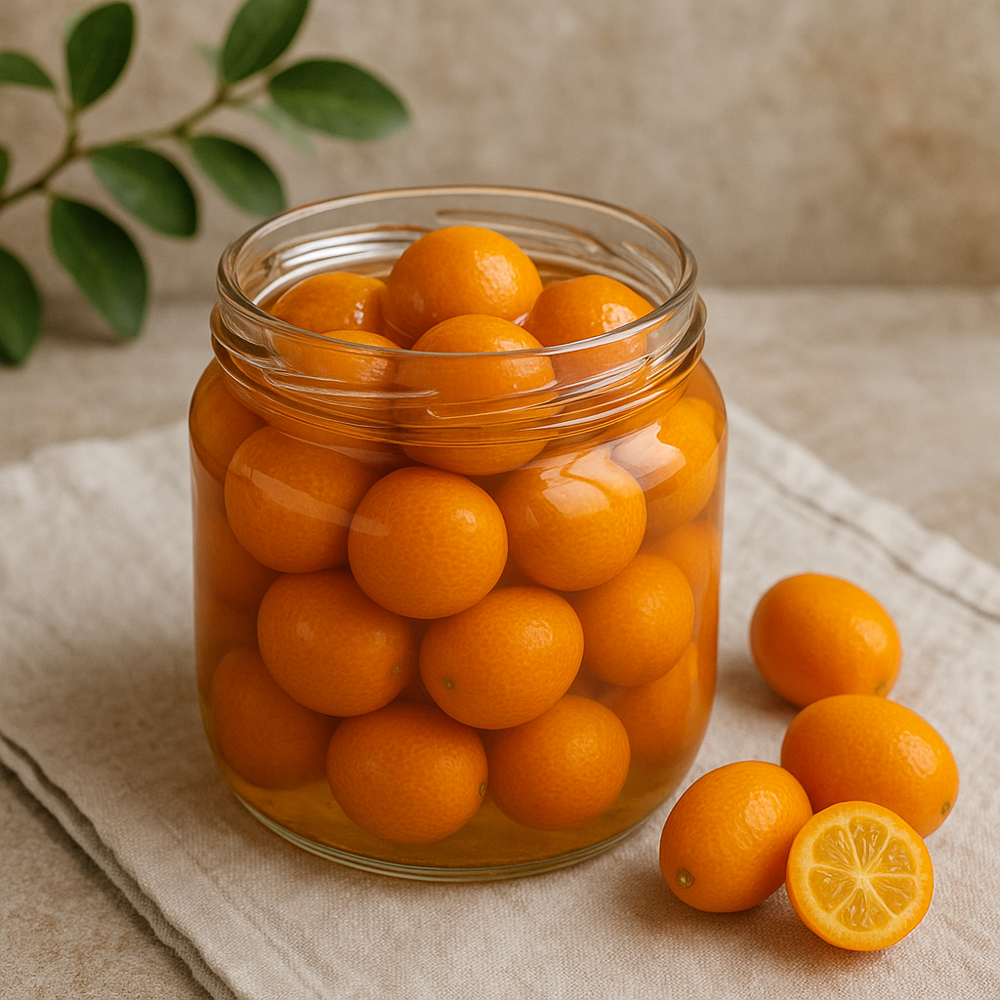

Nuestros Especiales y Novedades
*QUINOTOS CASEROS AL RHUM, CON HELADO*
-LENTEJAS A CABALLO-
-PASTA CON CHICHIRI-CECI-
-MONDONGO A LA ITALIANA-
-RIÑONES AL VINO BLANCO-
-CALAMARETTIS A LA ESCARPETTA-
MONDONGO A LA ITALIANA
*RABAS A LA CALABRIA*
*FUSILES CON BROCOLIS,ANCHOAS,GARBANZOS Y HONGOS*
*CARACOLES A LA BORDALEZA*
POSTRE CHICHOLINA
TIRAMISU CALABRES
Sobre Nosotros
CANTINA CHICHILO DE BUENOS AIRES desde hace 65 años al servicio del buen comer. Atendidos por sus dueños en un barrio de famosos "LA PATERNAL".
Además la producción de POL-KA la eligió para la apertura de la novela ILUSIONES y EL SODERO DE MI VIDA. Es el lugar preferido de Diego Maradona.
Somos los verdaderos....! Los demás nos imitan.....!
"UNA FAMILIA PARA SERVIRLO"
Ganadora de los Premios Clarín y Martín Fierro 2005.
*1956-2021* (Actualizar año si es necesario)
Contacto y Horarios
CANTINA ITALIANA CHICHILO DE BUENOS AIRES
CAMARONES 1901 ESQUINA TERRERO 2006
(1416) CAPITAL FEDERAL - REPUBLICA ARGENTINA
Teléfonos: 011-4581-1984 | 011-4584-1263 | Celular: 1150200152
E-MAIL: chichilo3554@hotmail.com
RESERVAS AL FONO: 011-4581-1984 ** 011-4584-1263
Horarios:
ABIERTO DE JUEVES A SABADOS DE NOCHE
SABADOS Y DOMINGOS ALMUERZOS
HORARIO CENA: DE 20.30 A 23.30 HRS.
HORARIO ALMUERZO: DE 12.30 A 14.30 HRS.